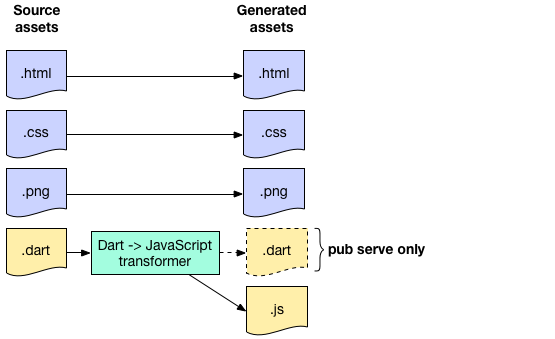

Данные - это всего лишь лишенная смысла разновидность программирования
Билл Госпер
Явная генерация
Скаффолдинг
«строительные леса»
Что можно нагенерировать
- MVC код
- Код для миграции БД
- Все что угодно
Node
Yeoman — yeoman.io
JHipster
jhipster.techКлиент

Сервер

Деплой
CI


Dart
- code_builder
- analyzer
- build (build_runner)
Плюсы
- Быстро
- Работает
- Можно прокачаться
- Меньше кода
Минусы
- Сложно понимать
- Сложно писать
- Теряем контроль
- Нужно перегенерировать
Неявная генерация
Javascript
На самом деле их много...
- Webpack, Rollup, Gulp...
- Babel, Typescript, Dart2js, DartDevc, Flow
Dart
Dart
build & build_runner
- Reflectable
import 'package:reflectable/reflectable.dart';
import 'main.reflectable.dart'; // Import generated code.
// Annotate with this class to enable reflection.
class Reflector extends Reflectable {
const Reflector() : super(invokingCapability);
}
const reflector = const Reflector();
@reflector // This annotation enables reflection on A.
class A {}
import 'package:reflectable/reflectable.dart';
import 'main.reflectable.dart'; // Import generated code.
// Annotate with this class to enable reflection.
class Reflector extends Reflectable {
const Reflector() : super(invokingCapability);
}
const reflector = const Reflector();
@reflector // This annotation enables reflection on A.
class A {}
build & build_runner
- Reflectable
- Less to CSS
- Angular templates (AOT compiler)
- Angular DI
import 'package:angular/angular.dart';
import 'package:an/app_component.template.dart' as ng;
void main() {
runApp(ng.AppComponentNgFactory);
}
Java
@Getter
@Setter
private int age = 10;
private int age = 10;
public int getAge() {
return age;
}
public void setAge(int age) {
this.age = age;
}
Groovy
import groovy.transform.Canonical
import groovy.transform.TupleConstructor
@Canonical
@TupleConstructor
class Person {
int id
String firstName
String lastName
Date birthdate
}
После компиляции получаем:
import java.util.Date;
import java.util.Map;
public class Person {
private int id;
private String firstName;
private String lastName;
private Date birthdate;
//Эта штука добавлена @TupleConstructor-ом
public Person(Map parameters){
this.id = (int) parameters.get("id");
this.firstName = (String) parameters.get("firstName");
this.lastName = (String) parameters.get("lastName");
this.birthdate = (Date) parameters.get("birthdate");
}
public Person(int id, String firstName, String lastName, Date birthdate) {
this.id = id;
this.firstName = firstName;
this.lastName = lastName;
this.birthdate =birthdate;
}
public Person(int id, String firstName, String lastName) {
this(id, firstName, lastName, null);
}
public Person(int id, String firstName) {
this(id, firstName, null, null);
}
public Person(int id) {
this(id, null, null, null);
}
public Person() {
this(0, null, null, null);
}
@Override
public boolean equals(Object o) {
if (this == o) return true;
if (o == null || getClass() != o.getClass()) return false;
Person person = (Person) o;
if (id != person.id) return false;
if (birthdate != null ? !birthdate.equals(person.birthdate) : person.birthdate != null) return false;
if (firstName != null ? !firstName.equals(person.firstName) : person.firstName != null) return false;
if (lastName != null ? !lastName.equals(person.lastName) : person.lastName != null) return false;
return true;
}
@Override
public int hashCode() {
int result = id;
result = 31 * result + (firstName != null ? firstName.hashCode() : 0);
result = 31 * result + (lastName != null ? lastName.hashCode() : 0);
result = 31 * result + (birthdate != null ? birthdate.hashCode() : 0);
return result;
}
@Override
public String toString() {
return "Person{" +
"id=" + id +
", firstName='" + firstName + '\'' +
", lastName='" + lastName + '\'' +
", birthdate=" + birthdate +
'}';
}
public int getId() {
return this.id;
}
public void setId(int paramInt) {
this.id = paramInt;
}
public String getFirstName() {
return this.firstName;
}
public void setFirstName(String paramString) {
this.firstName = paramString;
}
public String getLastName() {
return this.lastName;
}
public void setLastName(String paramString) {
this.lastName = paramString;
}
public Date getBirthdate() {
return this.birthdate;
}
public void setBirthdate(Date paramDate) {
this.birthdate = paramDate;
}
}
import groovy.transform.Canonical
import groovy.transform.TupleConstructor
@Canonical
@TupleConstructor
class Person {
int id
String firstName
String lastName
Date birthdate
}
import groovy.transform.Canonical
import groovy.transform.TupleConstructor
@Canonical
@TupleConstructor
@WrikeSuperAnnotation
@WrikeSuperMegaAnnotation
@VasyaPupkinSuperMegaAnnotation
class Person {
int id
String firstName
String lastName
Date birthdate
}
RUNTIME
Здесь все хорошо, даже слишком
Старая школа
var fullName = (firstName, lastName) =>
firstName + " " + lastName
console.log(argNames(fullName));
var argNames = (f) => {
let funcDef = f.toString();
let headRegex = /\(([\s\S]*?)\)/;
let head = headRegex.exec(funcDef)[1];
let argCands = head.split(/[ ,\n\r\t]+/);
let names = argCands.filter((x) => x);
return names;
}
var argNames = (f) => {
let funcDef = f.toString();
let headRegex = /\(([\s\S]*?)\)/;
let head = headRegex.exec(funcDef)[1];
let argCands = head.split(/[ ,\n\r\t]+/);
let names = argCands.filter((x) => x);
return names;
}
Объекты Proxy
var handler = {
get: function(target, name) {
return name in target ? target[name] : 42;
}};
var p = new Proxy({}, handler);
p.a = 1;
console.log(p.a, p.b); // 1, 42
Отзываемый Proxy
var revocable = Proxy.revocable({}, {
get: function(target, name) {
return '[[' + name + ']]';
}
});
var proxy = revocable.proxy;
console.log(proxy.foo); // "[[foo]]"
revocable.revoke();
console.log(proxy.foo); // ошибка TypeError
Reflect
Reflect.has(Object, 'assign'); // true
// Function.prototype.apply.call(Math.floor, undefined, [1.75]);
Reflect.apply(Math.floor, undefined, [1.75]);
if (Reflect.defineProperty(target, property, attributes)) {
// успех
} else { // что-то пошло не так
}
class Cat { meow() { return `${this.name} says Meow!`} }
Тоже самое
Object.defineProperty(Cat.prototype, 'meow', {
value: specifiedFunction,
enumerable: false,
configurable: true,
writable: true
});
function readonly(target, key, descriptor) {
descriptor.writable = false;
return descriptor;
}
Ошибка! Так как мы не можем изменять реализацию метода.
let garfield = new Cat();
garfield.meow = () => { console.log('I want lasagne!'); };
её нет
её почти нет
noSuchMethod(Invocation invocation);
Использование в тестах
class Car {
String get company => 'BMW';
}
abstract class Mock {
dynamic noSuchMethod(Invocation i){
if(i.memberName == Symbol('company')){
return 'Lada';
}
return null;
}
}
class CarMock extends Mock implements Car {}
void main(){
final c = new CarMock();
print(c.company);
} // Lada
Добавим аргументов
class Car {
String company(String a) => a;
}
dynamic noSuchMethod(Invocation i) {
final realCar = new Car();
final nameArg = i.positionalArguments[0];
bool isNull = nameArg == null;
bool isCompany = i.memberName == Symbol('company');
if(isCompany){
return isNull? 'Lada': realCar.company(nameArg);
}
}
void main() {
final c = new CarMock();
print(c.company(null)); // Lada
print(c.company('BMW')); // BMW
}
Дано
void main(){
new List<Apple>()
..add(Apple())
..add(Orange());
}
Дано
void main(){
new List<Apple>()
..add(Apple())
..add(Orange());
}
as упадет
// Dart
@JS('id')
external T id<T>(dynamic input);
// Java Script
window.id = (id) => id;
final list = new List()
..add(Orange())
..add(id<Orange>(Apple()));
- Заюзать Proxy из JS
- Заменить реализацию методе в рантайме
- Получить люлей за неадекватный код на ревью
Когда нужно метопрограмирование:
- Когда есть DI
- Когда у вас статическая типизация
- Когда вы в тупике
#define TRUE (random()>0.5)
//счастливой отладки, суки